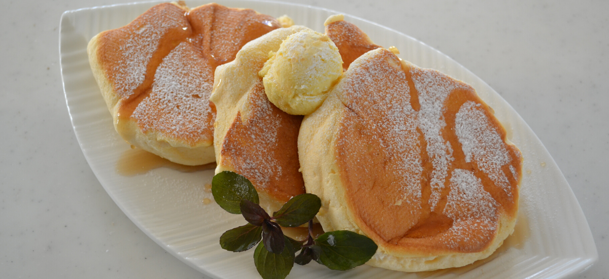

Angelo Arnaiz's Pancake Recipe
Fluffy Pancakes

⏱ Prep Time: 10 mins
🍽 Servings: 6
🔥 Difficulty: Easy
Ingredients
- 1 1/2 cups all-purpose flour
- 3 1/2 tsp baking powder
- 1 tbsp sugar
- 1 1/4 cups milk
- 1 egg
- 3 tbsp melted butter
- Pinch of salt
Instructions
- Step 1: In a bowl, mix flour, baking powder, sugar, and salt.
- Step 2: Make a well in the center, pour in milk, egg, and melted butter. Stir until smooth.
- Step 3: Heat a griddle or pan over medium heat. Pour 1/4 cup batter for each pancake.
- Step 4: Cook until bubbles form on the surface, then flip and cook the other side until golden brown.
- Step 5: Serve hot with syrup, butter, or your favorite toppings. Enjoy!